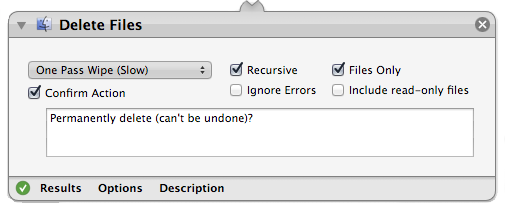

Apple's Automator is a handy application for basic OSX automation. One thing it doesn't ship with, however, is the ability to delete files. It can move items to the trash, but it can't empty the trash without a little help. Delete Files.action makes file deletion possible, and provides the following:
I first released this back in September of 2005; the current version is the same as what was released then, but should play more nicely with modern OSX installs. If you have any trouble with it, please contact me.
JMPrevNextAccessoryView is a simple inputAccessoryView for UITextFields and UITextViews which provides serial navigation functionality similar to that which Safari provides when navigating form elements. It's easy to integrate, flexible, and its appearance is customizable for each associated field.
Disclaimer: All software made available under respective licenses, included with distributions. All software provided as-is.
I've worked in software, of one form of another, and various roles, since 1995. I'm a fan of practical solutions and sharing the love. You can find me on LinkedIn, GitHub, and StackOverflow. Here is my résumé.